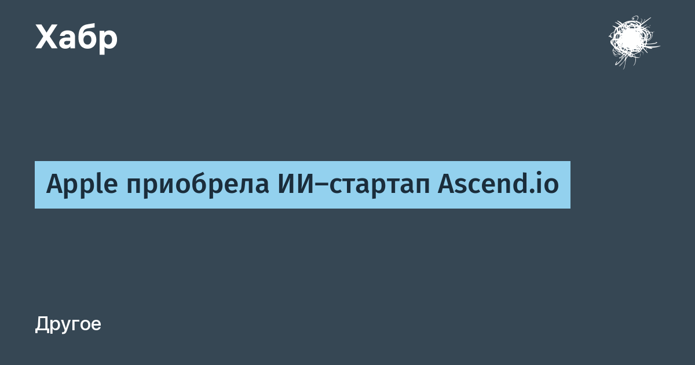

Apple закрыла сделку по приобретению компании Ascension Labs, известной как Ascend.io, — стартапа, который с 2015 года строил платформы для работы с данными и последним своим направлением выбрал агентную инженерию данных (Agentic Data Engineering). Формат классический для Apple последних лет — acqui-hire: корпорация получила право делать предложения и нанимать определённых сотрудников, неисключительную лицензию на интеллектуальную собственность Ascend и право на получение части патентов. Финансовые условия стороны не раскрывают.
Важная деталь: ни Apple, ни Ascend не выпускали пресс-релизов. Сделку обнаружил журналист 9to5Mac в обновлённом списке приобретений Европейской комиссии — после Digital Markets Act Apple обязана публично отчитываться о покупках выше определённого порога. На сайте Ascend.io теперь висит прощальная запись о десяти годах миссии «make data engineering delightful»: компания перечисляет свои вехи — декларативные пайплайны, объединённая платформа ingest/transform/orchestration, автоматизацию DataAware и, наконец, агентов, работающих рядом с командами на всём жизненном цикле данных.
По данным источников, знакомых с планами Apple, технологии Ascend.io пойдут не в потребительские продукты, а во внутреннюю инфраструктуру данных и инженерные процессы Apple. Логика понятна: агентные системы, которые сами чинят и оптимизируют пайплайны данных, — то, что крупным техкомам сейчас дороже, чем очередной виджет для пользователя.
Это уже вторая ИИ-покупка Apple за месяц: в октябре корпорация забрала часть активов швейцарской Samplab — инструментов на базе ИИ для работы со звуком. Вероятно, они расширят возможности Logic Pro, а части команды Samplab Apple тоже предложит работу. Обе сделки — аккуратная стратегия: не громкие поглощения ради продуктов, а точечный найм команд и лицензий под конкретные инженерные задачи.